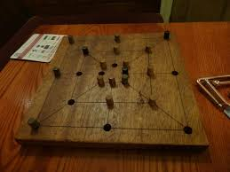
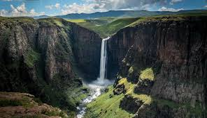

About the Lesotho Cultural Heritage Festival
The Lesotho Cultural Heritage Festival is the kingdom's premier cultural event, celebrating the rich traditions, vibrant arts, and enduring spirit of the Basotho people. Established in 2015, this annual festival has grown from a small community gathering to an internationally recognized cultural showcase.
History and Significance
📜 Our Origins
The festival was founded by the Lesotho Tourism Board in collaboration with the Ministry of Tourism, Environment and Culture. It was created to preserve and promote Basotho cultural heritage while boosting tourism and creating economic opportunities for local communities.
🏛️ Cultural Preservation
In a rapidly modernizing world, the festival serves as a vital platform for preserving traditional knowledge, customs, and practices. It ensures that future generations remain connected to their roots while embracing progress.
🌍 International Recognition
Since its inception, the festival has attracted visitors from over 30 countries, earning recognition from UNESCO for its efforts in cultural preservation. It has become a model for other African nations seeking to celebrate their heritage.
💰 Economic Impact
The festival generates significant economic benefits for local communities, creating jobs, supporting artisans, and promoting sustainable tourism development across Lesotho.
Our Mission and Vision
🎯 Mission
- To preserve and promote Basotho cultural heritage
- To provide a platform for cultural exchange and learning
- To support local artists, artisans, and performers
- To promote Lesotho as a premier cultural tourism destination
- To foster national pride and cultural identity
🔮 Vision
- To become Africa's leading cultural heritage festival
- To create sustainable cultural tourism opportunities
- To preserve Basotho traditions for future generations
- To position Lesotho as a global cultural destination
- To promote peace and understanding through cultural exchange
Target Tourists and Visitors
🌐 International Visitors
Who we welcome:
- Cultural enthusiasts and heritage tourists
- Academic researchers and anthropologists
- Adventure travelers seeking authentic experiences
- Photographers and documentary filmmakers
- Families looking for educational vacations
🏠 Local and Regional Visitors
Who we serve:
- Basotho communities from all districts
- Students and educational institutions
- Regional tourists from South Africa and neighboring countries
- Diaspora Basotho returning to connect with their heritage
- Local businesses and entrepreneurs
Cultural Significance

🎮 Traditional Games
The festival features traditional Basotho games that have been played for centuries, including morabaraba (board game), diketo (stone throwing), and various athletic competitions that test strength and skill.

🏺 Traditional Crafts
Master artisans demonstrate traditional crafts including basket weaving, pottery making, and the creation of the famous Basotho blanket (Mokorotlo), which is an integral part of Basotho cultural identity.
Community Impact
The Lesotho Cultural Heritage Festival is more than just a celebration – it's a catalyst for positive change in our communities:
👥 Youth Engagement
We actively involve young people through cultural workshops, mentorship programs, and youth performance opportunities, ensuring the transmission of cultural knowledge to the next generation.
🤝 Community Development
Proceeds from the festival support community development projects, including school construction, healthcare facilities, and infrastructure improvements in rural areas.
🎓 Educational Programs
We partner with schools and universities to provide educational programs that integrate cultural studies into the curriculum, reaching thousands of students annually.
Partners and Sponsors
The festival is made possible through the generous support of:
- Government Partners: Ministry of Tourism, Environment and Culture, Lesotho Tourism Board
- International Partners: UNESCO, African Union, World Tourism Organization
- Private Sector: Local businesses, tourism operators, and corporate sponsors
- Cultural Organizations: Basotho Cultural Association, National Museum